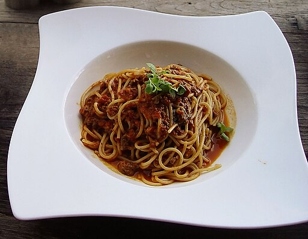

Spaghetti Bolognese

A simple recipe for an excellent Spaghetti Bolognese dish. Homemade pasta sauce with beef, vegetables, tomatoes and herbs that add tons of flavor to this Italian classic dish.
Ingredients
- 2 tablespoons olive oil
- 1 large onion, minced
- 4 slices bacon, cut into 1/2 inch pieces
- 1 clove garlic, minced
- 1 pound lean ground beef
- 1/2 pound ground pork
- 1 (28 ounce) can Italian plum tomatoes
- 1/2 pound fresh mushrooms, sliced
- 6 ounces tomato sauce
- 2 carrots, shredded
- 1 stalk celery, chopped
- 1/2 cup dry white wine
- 1/2 cup chicken stock
- 1/2 teaspoon dried basil
- 1/2 teaspoon dried oregano
- salt and pepper to taste
- 1 pound pasta
Directions
- Warm oil in a large skillet over medium heat. Sauté onion, bacon, and garlic in hot oil until bacon is browned and crisp, about 10 minutes. Use a slotted spoon to transfer bacon mixture to a paper towel-lined plate to drain; set aside.
- Place the same large skillet over medium-high heat. Cook and stir ground beef and pork in the hot skillet until browned and crumbly, 5 to 7 minutes. Drain and discard grease.
- Stir bacon mixture, tomatoes, mushrooms, tomato sauce, carrots, cellery, wine, chicken stock, basil, oregano, salt, and pepper into the meat mixture. Bring to a boil. Cover, reduce heat, and simmer sauce for 1 hour, stirring occasionally.
- Meanwhile, bring a large pot of lightly salted water to a boil. Add pasta and cook in boiling water until al dente, 8 to 10 minutes; drain.
- Serve sauce over hot pasta.